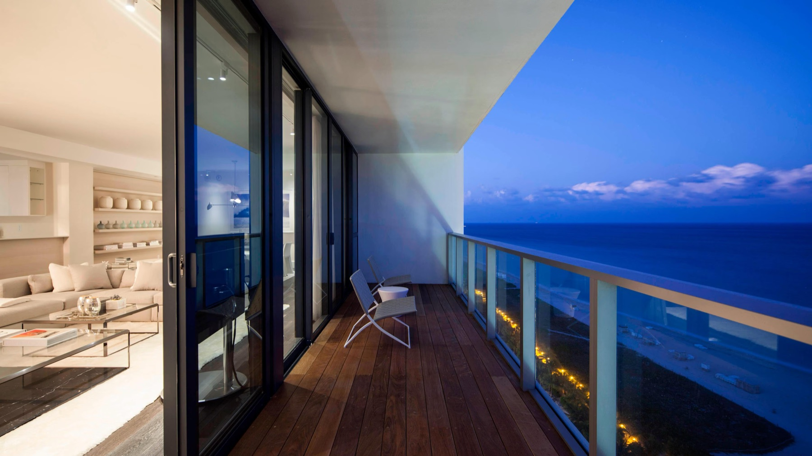
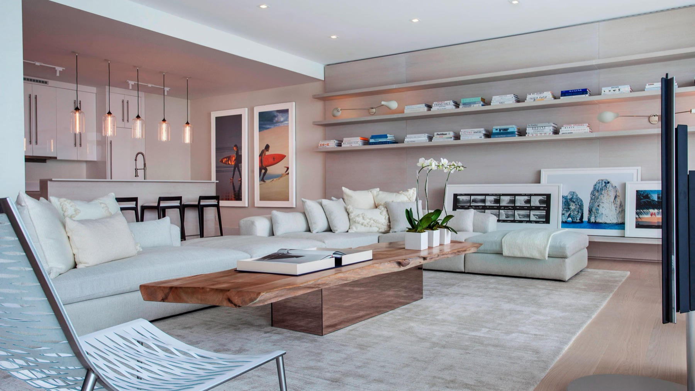

Favorite Hotels
W South Beach works when a client wants a social South Beach stay with bigger suite inventory, strong views, and more livability than people expect.
W South Beach is one of those hotels people sometimes misread. They assume it is only party energy, but the reason I keep it in the conversation is that the suite product is genuinely useful, the rooms are all ocean-facing, and the property can work very well for stylish couples, friend trips, and certain families who want South Beach to feel fun.
What makes it unique
The room product is much bigger and more usable than people expect from South Beach.
That is what gives W real value. When a client wants the social energy of South Beach but still wants to feel like they have breathing room, the larger suite-style layouts make a huge difference.
Stay
All rooms face the ocean
Private balconies and bigger suite-style layouts make this much easier to live in than many South Beach competitors.
Dining
Social but still useful
MR CHOW, The Grove, Living Room Bar, and WET Bar & Grille cover the stay well.
Best For
Suite-driven South Beach luxury
Excellent for groups, stylish couples, and travelers who want beach access with more social energy around them.
Known For
Ocean views and oversized balconies
It is one of the few South Beach hotels where every room has an ocean view and its own balcony.


The overall setup
The easiest way to explain W South Beach is that it gives clients the South Beach location and energy they want, but with a room product that feels larger and more practical than the average beachfront hotel. The official positioning leans hard into ocean-view rooms and oversized balconies, and that matters because it instantly makes the stay feel less cramped and more residential.
For clients who want to feel part of South Beach rather than tucked away from it, this is one of the more useful high-end choices.
Rooms, suites, and top-end product
What I like most about W South Beach is the suite orientation of the property. Even the standard room experience feels more generous than many competitors, and once you move into the bigger suites and penthouse product, the hotel starts to make much more sense for longer stays, friend trips, or clients who care about entertaining space. The bigger layouts, floor-to-ceiling windows, and oceanfront balconies do a lot of work here.
If the client wants something that feels more social than Surfside but still luxurious and spacious, W becomes very easy to justify.



Restaurants, bars, and how the hotel lives
Officially, the dining lineup includes MR CHOW, The Grove, Living Room Bar, and WET Bar & Grille. That mix works because it supports different parts of the day well. MR CHOW gives the property its best-known dinner identity. Living Room Bar helps keep the social energy alive before or after dinner. WET works for poolside lunches and more casual afternoons. The Grove handles open-air dining well when the client wants something easy without leaving the hotel.
It is not a quiet culinary retreat, but it is a very usable social-luxury setup.
Pools, beach, and what people actually do here
The beach and pool setup are a big part of the appeal. Clients can do the full South Beach day properly here: pool, beach, lunch, drinks, and then back up to the room without the property ever feeling sleepy. The hotel also has rooftop sport courts, which is a nice differentiator for more active guests.
This is the stay I reach for when someone wants fun and movement around them, but still wants enough space and polish to feel luxurious.
How good the service is
The service here works best when the client understands the tone of the property. This is contemporary, social luxury, not a hushed formal grand hotel. Within that tone, the team can make the stay feel smooth, upbeat, and surprisingly comfortable. For the right traveler, that is exactly the kind of service style they want.
Who I would book it for
- Stylish couples who want South Beach energy with better rooms
- Groups and celebratory travelers who want more space
- Clients who like an ocean-view balcony and a livelier beach atmosphere
- Younger travelers who want luxury without formality
My honest take
W South Beach is better than people give it credit for if you use it for the right client. The suite inventory, the ocean views, and the social energy make it a much stronger South Beach option than people assume.